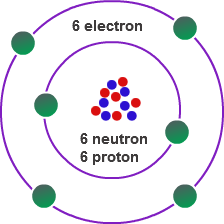
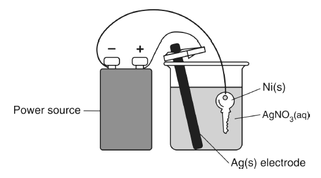
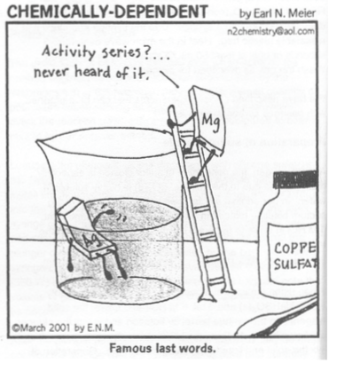

The table of ions and the reactivity series are in the Data section at the end of the paper.
Section A: Multiple choice (12 marks)
Which of the following is the electron configuration of a magnesium ion, Mg2+?
Use the periodic table: Mg is 2, 8, 2 and loses its two outer electrons.
In redox reactions,
OIL RIG: Oxidation Is Loss, Reduction Is Gain (of electrons).
A Group 1 reactive metal + water is likely to give the products:
A reactive metal + hydrochloric acid is likely to give the products:
The salt is a metal chloride, e.g. Mg + 2HCl → MgCl2 + H2. Ionic compounds like this are salts.
Using your knowledge of the reactivity series, which of the following metals are ALL likely to react with water (or steam)?
Displacement reactions occur when a metal "kicks out" another metal from a solution. Which of the following is likely to result in a displacement reaction?
Magnesium is above aluminium in the reactivity series, so it can displace it.
In the electrolysis of water, oxygen gas forms at the
Oxygen forms by oxidation, which happens at the positive anode.
During electrolysis, metallurgists use large currents and oppositely charged electrodes to separate positive and negative ions. This works well to separate copper from copper sulfate, but electrolysis will not let us separate sodium from NaCl(aq). The best reason for this is:
To separate sodium from sodium chloride using electrolysis,
Thermite is a pyrotechnic displacement reaction between a reactive metal powder (aluminium) and a metal oxide (iron(III) oxide). It produces a great quantity of heat and a stream of molten iron and aluminium oxide. The balanced chemical equation for this reaction is:
Chalcopyrite is a copper iron sulfide mineral and the most abundant copper ore. Its formula is CuFeS2. RAM (Cu) = 63.6, RAM (Fe) = 55.9, RAM (S) = 32.1. (Take 1 RAM to equal 1 g.) How much chalcopyrite is needed to produce 1 kg (1000 g) of copper?
CuFeS2 = 63.6 + 55.9 + 2 × 32.1 = 183.7. Mass needed = 1000 ÷ 63.6 × 183.7 = 2888 g ≈ 2900 g.
Which one of the following is not likely to increase the rate of the reaction of magnesium and HCl?
Section B: Short answer (16 marks)
Use your table of ions to complete the table. (Type formulas with ordinary numbers, e.g. Na2SO4.)
| Compound | Chemical formula |
|---|---|
| Tin sulfate | |
| Magnesium hydroxide | |
| (NH4)2CO3 | |
| Calcium phosphate |
"Tin sulfate" doesn't say which tin ion: tin(II) sulfate is SnSO4 and tin(IV) sulfate is Sn(SO4)2.
Balance the following equation.
Al(s) + CuSO4(aq) → Cu(s) + Al2(SO4)3(aq)
Question 4 (2 marks)

Name the element shown in the diagram above:
Describe (or draw on paper) the electron shell diagram of an atom with a mass number of 13 and an atomic number of 7.
Nitrogen-13: a nucleus with 7 protons and 6 neutrons (13 − 7), surrounded by 7 electrons, arranged 2 in the first shell and 5 in the second shell (2, 5).
Match the common alloys with their constituent parts.
Question 6 (2 marks)
The diagram below represents electroplating silver onto a nickel key.

Write a half-equation for the oxidation of silver.
Ag(s) → Ag+(aq) + e−
Identify the cathode.
Silver ions are reduced to silver metal at the cathode, so the object being plated must be the cathode (connected to the negative terminal).
Question 7 (4 marks)
Look at the cartoon below and answer the questions.

Why is the Ag not reacting in the copper(II) sulfate solution?
Silver is less reactive than copper, so it will not displace copper.
What two products will form when the magnesium character dives into the copper(II) sulfate solution?
and
Mg(s) + CuSO4(aq) → MgSO4(aq) + Cu(s)
- What substance will be oxidised?
- What substance will be reduced?
OIL RIG: Mg loses electrons (is oxidised) to become Mg2+; Cu2+ gains electrons (is reduced) to become Cu.
Data: table of ions and reactivity series
Table 1: Positive and negative ions
| +1 | +2 | +3 | +4 |
|---|---|---|---|
| Lithium Li+ | Magnesium Mg2+ | Aluminium Al3+ | Tin(IV) Sn4+ |
| Sodium Na+ | Calcium Ca2+ | Chromium(III) Cr3+ | Lead(IV) Pb4+ |
| Potassium K+ | Barium Ba2+ | Iron(III) Fe3+ | |
| Silver Ag+ | Iron(II) Fe2+ | ||
| Copper(I) Cu+ | Copper(II) Cu2+ | ||
| Ammonium NH4+ | Zinc Zn2+ | ||
| Tin(II) Sn2+ | |||
| Lead(II) Pb2+ | |||
| Mercury Hg2+ | |||
| Manganese(II) Mn2+ |
| −1 | −2 | −3 |
|---|---|---|
| Fluoride F− | Oxide O2− | Nitride N3− |
| Chloride Cl− | Sulfide S2− | Phosphate PO43− |
| Bromide Br− | Sulfate SO42− | |
| Iodide I− | Carbonate CO32− | |
| Hydroxide OH− | Sulfite SO32− | |
| Nitrate NO3− | ||
| Permanganate MnO4− |
Table 2: Reactivity series (most reactive first)
Potassium K > Sodium Na > Calcium Ca > Magnesium Mg > Aluminium Al > (Carbon) > Zinc Zn > Iron Fe > Lead Pb > (Hydrogen) > Copper Cu > Silver Ag > Gold Au